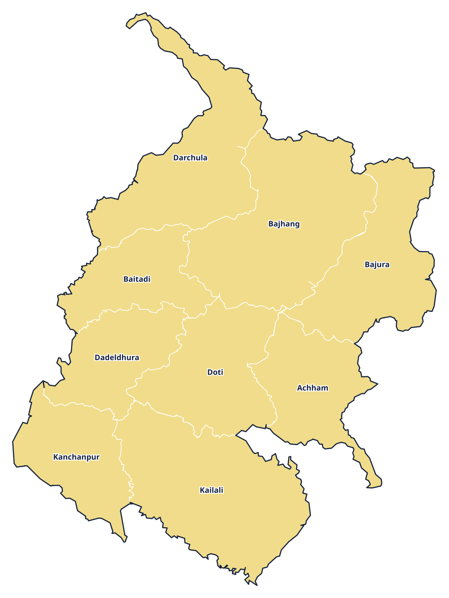

Province 7 · प्रदेश 7
Sudurpashchim Province
सुदूरपश्चिम प्रदेश

Provincial information
Capital: Godawari (गोदावरी)
Districts: 9
District directory
Select a district to view its profile, find news coverage, and browse local links.
Province 7 · प्रदेश 7
सुदूरपश्चिम प्रदेश

Capital: Godawari (गोदावरी)
Districts: 9
Select a district to view its profile, find news coverage, and browse local links.